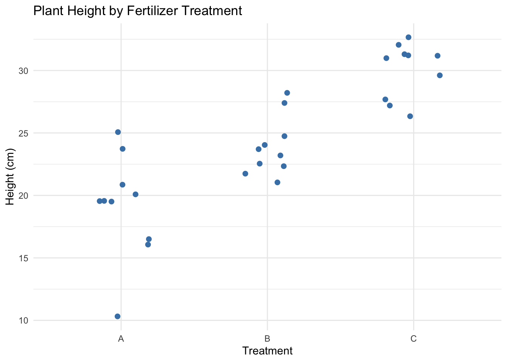
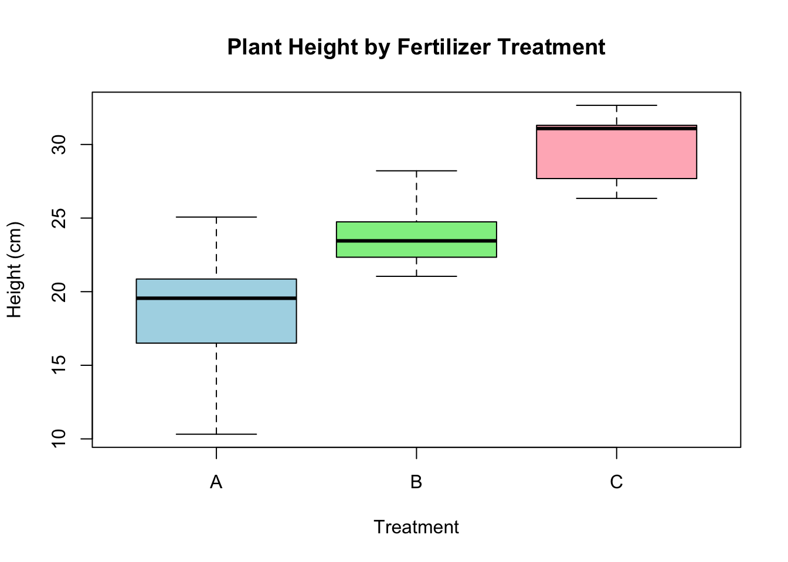
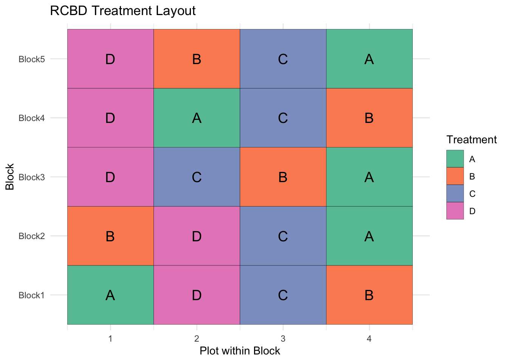
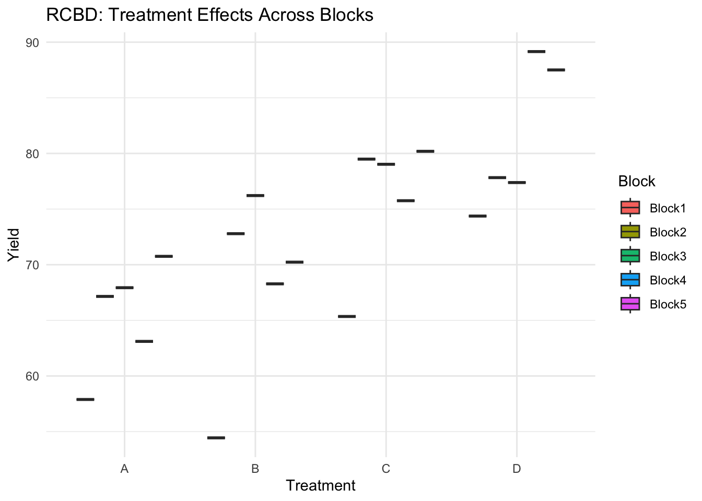
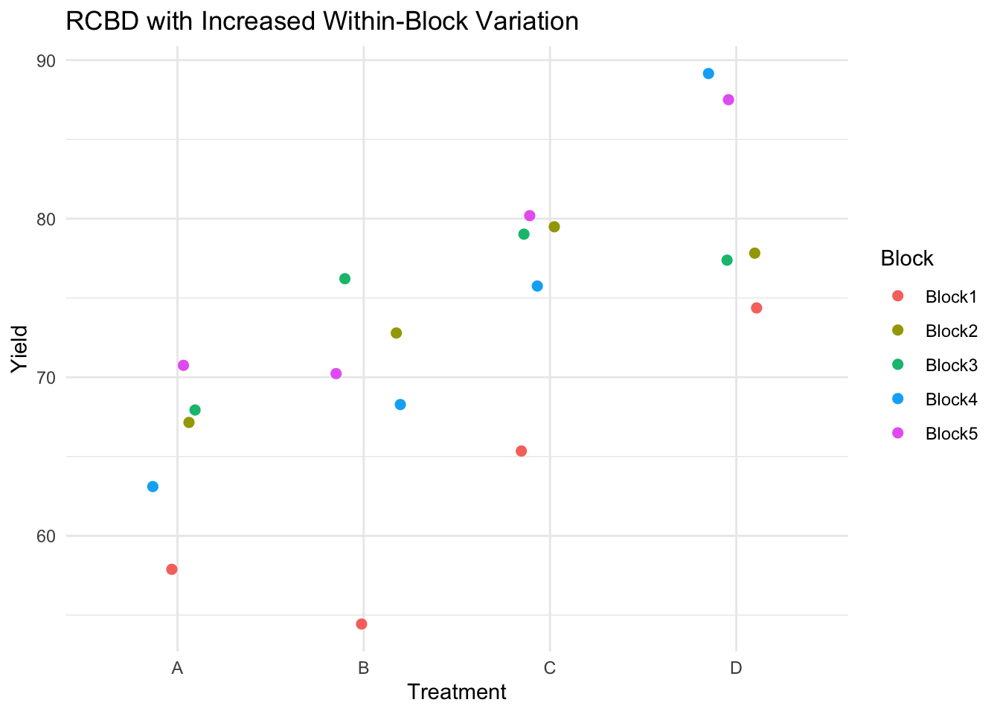
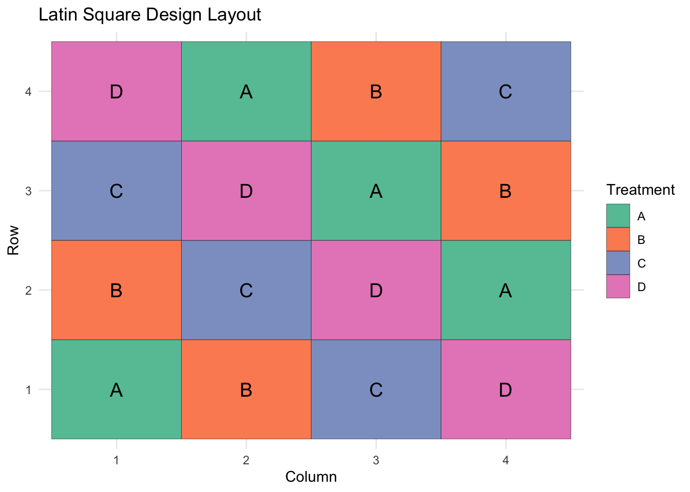
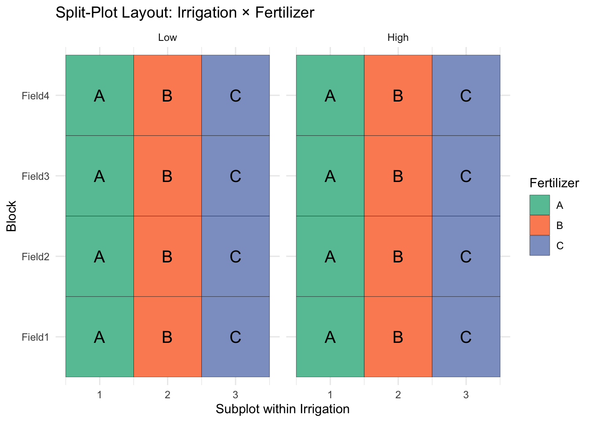
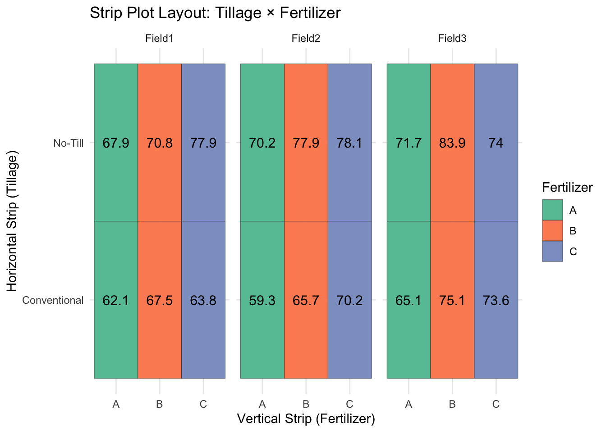

Chapter 4 Experimental Design
4.1 Why is sound experimental design important?
Experimental design involves steps taken at the beginning of a study to control for variation and protect the validity of statistical results. Good experimental design paired with proper statistical methods ensures robust findings while minimizing animal suffering and resource expenditure (festingReductionAnimalUse1994?; johnsonPracticalAspectsExperimental2002?; lehnerDESIGNEXECUTIONANIMAL?). Experiments deal with field variability and animal diversity. Designs seek to control the variation to allow for treatment effects to show themselves in a repeatable manner.
4.2 Completely Randomized
Completely randomized designs are used when comparing more than one treatment. Each experimental unit is assumed to be a random selection from the population.
# Set seed for reproducibility
set.seed(123)
# Define parameters
n_per_treatment = 10 # number of replicates per treatment
treatments = c("A", "B", "C")
n_total = n_per_treatment * length(treatments)
# Create treatment vector (randomized)
treatment = sample(rep(treatments, each = n_per_treatment))
# Simulate response variable (e.g., plant height)
# Assume different means for each treatment
response = rnorm(n_total,
mean = ifelse(treatment == "A", 20,
ifelse(treatment == "B", 25, 30)),
sd = 3)
# Create data frame
crd_data = data.frame(
PlantID = 1:n_total,
Treatment = treatment,
Height = response
)
# View first few rows
head(crd_data)## PlantID Treatment Height
## 1 1 B 21.74290
## 2 2 B 24.74373
## 3 3 B 28.21183
## 4 4 A 19.56382
## 5 5 A 16.50337
## 6 6 B 22.54445## Treatment Height
## 1 A 19.12492
## 2 B 23.89719
## 3 C 30.02318## Df Sum Sq Mean Sq F value Pr(>F)
## Treatment 2 596.9 298.46 32.55 6.4e-08 ***
## Residuals 27 247.6 9.17
## ---
## Signif. codes: 0 '***' 0.001 '**' 0.01 '*' 0.05 '.' 0.1 ' ' 1# Basic scatter plot
ggplot(crd_data, aes(x = Treatment, y = Height)) +
geom_jitter(width = 0.2, height = 0, color = "steelblue", size = 2) +
labs(title = "Plant Height by Fertilizer Treatment",
x = "Treatment",
y = "Height (cm)") +
theme_minimal()
# Boxplot
boxplot(Height ~ Treatment, data = crd_data,
main = "Plant Height by Fertilizer Treatment",
xlab = "Treatment", ylab = "Height (cm)",
col = c("lightblue", "lightgreen", "lightpink"))
4.3 Randomized Complete Block Design
The randomized complete block is useful for blocking across some known source of variation. It allows for more precise comparison between treatments when their is known varation within the experimental units. It has the added advantage of providing a comparison across the blocks if desired.
# Randomized Complete Block -----
# Load libraries
library(dplyr)
library(ggplot2)
# Define factors
treatments <- c("A", "B", "C", "D")
blocks <- paste0("Field", 1:5)
# Create RCBD layout
set.seed(42)
# Define factors
treatments <- c("A", "B", "C", "D")
blocks <- paste0("Block", 1:5)
# Create RCBD layout
rcbd <- expand.grid(Block = blocks, Treatment = treatments) %>%
group_by(Block) %>%
mutate(Treatment = sample(Treatment)) %>%
ungroup() %>%
mutate(
# Simulate subplot-level variation within each block
SubplotNoise = rnorm(n(), mean = 0, sd = 4), # Increased SD for within-field variation
# Simulate yield: treatment + block + subplot noise + residual error
Yield = 50 +
ifelse(Treatment == "A", 5,
ifelse(Treatment == "B", 10,
ifelse(Treatment == "C", 15, 20))) +
as.numeric(gsub("Block", "", Block)) * 3 +
SubplotNoise +
rnorm(n(), mean = 0, sd = 2)
)
# Add numeric position for plotting
rcbd <- rcbd %>%
group_by(Block) %>%
mutate(Plot = row_number()) %>%
ungroup()
# Plot layout
ggplot(rcbd, aes(x = Plot, y = Block, fill = Treatment)) +
geom_tile(color = "black") +
geom_text(aes(label = Treatment), size = 5) +
# scale_y_reverse(breaks = rcbd$Block, labels = rcbd$Block) +
scale_fill_brewer(palette = "Set2") +
labs(title = "RCBD Treatment Layout",
x = "Plot within Block",
y = "Block") +
theme_minimal()
## # A tibble: 6 × 5
## Block Treatment SubplotNoise Yield Plot
## <fct> <fct> <dbl> <dbl> <int>
## 1 Block1 A -4.34 57.9 1
## 2 Block2 B 6.45 72.8 1
## 3 Block3 D 0.143 77.4 1
## 4 Block4 D 5.26 89.2 1
## 5 Block5 D 3.91 87.5 1
## 6 Block1 D 3.53 74.4 2ggplot(rcbd, aes(x = Treatment, y = Yield, fill = Block)) +
geom_boxplot() +
theme_minimal() +
labs(title = "RCBD: Treatment Effects Across Blocks")
ggplot(rcbd, aes(x = Treatment, y = Yield, color = Block)) +
geom_jitter(width = 0.2, height = 0, size = 2) +
theme_minimal() +
labs(title = "RCBD with Increased Within-Block Variation")
## Df Sum Sq Mean Sq F value Pr(>F)
## Treatment 3 780.3 260.09 14.911 0.000238 ***
## Block 4 497.1 124.28 7.125 0.003534 **
## Residuals 12 209.3 17.44
## ---
## Signif. codes: 0 '***' 0.001 '**' 0.01 '*' 0.05 '.' 0.1 ' ' 1## Loading required package: Matrix##
## Attaching package: 'Matrix'## The following objects are masked from 'package:tidyr':
##
## expand, pack, unpack## Linear mixed model fit by REML ['lmerMod']
## Formula: Yield ~ Treatment + (1 | Block)
## Data: rcbd
##
## REML criterion at convergence: 105.4
##
## Scaled residuals:
## Min 1Q Median 3Q Max
## -1.4188 -0.4879 0.1124 0.4139 1.6189
##
## Random effects:
## Groups Name Variance Std.Dev.
## Block (Intercept) 26.71 5.168
## Residual 17.44 4.177
## Number of obs: 20, groups: Block, 5
##
## Fixed effects:
## Estimate Std. Error t value
## (Intercept) 65.366 2.972 21.997
## TreatmentB 3.024 2.641 1.145
## TreatmentC 10.595 2.641 4.011
## TreatmentD 15.882 2.641 6.012
##
## Correlation of Fixed Effects:
## (Intr) TrtmnB TrtmnC
## TreatmentB -0.444
## TreatmentC -0.444 0.500
## TreatmentD -0.444 0.500 0.5004.4 Latin Squares
The Latin Square is an extension of the randomized complete block design, but rather than the treatments being randomly assigned within each block, they are strategically allocated such that each treatment occurs once between each row and each column.
# Define factors
treatments <- c("A", "B", "C", "D")
latin_square <- matrix(c("A", "B", "C", "D",
"B", "C", "D", "A",
"C", "D", "A", "B",
"D", "A", "B", "C"),
nrow = 4, byrow = TRUE)
# Create data frame
df <- expand.grid(Row = factor(1:4),
Column = factor(1:4)) %>%
mutate(Treatment = as.vector(t(latin_square)),
# Simulate yield with treatment effect + row/column noise
Yield = 50 +
ifelse(Treatment == "A", 5,
ifelse(Treatment == "B", 10,
ifelse(Treatment == "C", 15, 20))) +
as.numeric(Row)*2 +
as.numeric(Column)*1.5 +
rnorm(16, mean = 0, sd = 2))
head(df)## Row Column Treatment Yield
## 1 1 1 A 57.93586
## 2 2 1 B 69.06357
## 3 3 1 C 73.74532
## 4 4 1 D 73.82487
## 5 1 2 B 66.96279
## 6 2 2 C 71.76247ggplot(df, aes(x = Column, y = Row, fill = Treatment)) +
geom_tile(color = "black") +
geom_text(aes(label = Treatment), size = 5) +
scale_fill_brewer(palette = "Set2") +
theme_minimal() +
labs(title = "Latin Square Design Layout")
## Df Sum Sq Mean Sq F value Pr(>F)
## Row 3 27.8 9.25 1.698 0.265817
## Column 3 102.4 34.15 6.264 0.028037 *
## Treatment 3 473.9 157.96 28.980 0.000574 ***
## Residuals 6 32.7 5.45
## ---
## Signif. codes: 0 '***' 0.001 '**' 0.01 '*' 0.05 '.' 0.1 ' ' 14.5 Split plot design
library(dplyr)
library(ggplot2)
library(lme4)
# Define factors
blocks <- paste0("Field", 1:4)
irrigation <- c("Low", "High")
fertilizer <- c("A", "B", "C")
# Create layout
set.seed(42)
splitplot <- expand.grid(Block = blocks,
Irrigation = irrigation,
Fertilizer = fertilizer) %>%
mutate(
# Simulate effects
IrrigationEff = ifelse(Irrigation == "High", 10, 0),
FertilizerEff = case_when(
Fertilizer == "A" ~ 5,
Fertilizer == "B" ~ 10,
Fertilizer == "C" ~ 15
),
BlockEff = as.numeric(gsub("Field", "", Block)) * 2,
Residual = rnorm(n(), 0, 3),
Yield = 50 + IrrigationEff + FertilizerEff + BlockEff + Residual
)
# Add plot position for layout
splitplot <- splitplot %>%
group_by(Block, Irrigation) %>%
mutate(Plot = row_number()) %>%
ungroup()
ggplot(splitplot, aes(x = Plot, y = Block, fill = Fertilizer)) +
geom_tile(color = "black") +
facet_wrap(~ Irrigation) +
geom_text(aes(label = Fertilizer), size = 5) +
scale_fill_brewer(palette = "Set2") +
theme_minimal() +
labs(title = "Split-Plot Layout: Irrigation × Fertilizer",
x = "Subplot within Irrigation",
y = "Block")
# Mixed model: Irrigation as main plot, Fertilizer as subplot
model_split <- lmer(Yield ~ Irrigation * Fertilizer + (1 | Block/Irrigation), data = splitplot)
summary(model_split)## Linear mixed model fit by REML ['lmerMod']
## Formula: Yield ~ Irrigation * Fertilizer + (1 | Block/Irrigation)
## Data: splitplot
##
## REML criterion at convergence: 103.6
##
## Scaled residuals:
## Min 1Q Median 3Q Max
## -1.37592 -0.43900 0.08326 0.29437 1.68979
##
## Random effects:
## Groups Name Variance Std.Dev.
## Irrigation:Block (Intercept) 2.374 1.541
## Block (Intercept) 16.151 4.019
## Residual 6.420 2.534
## Number of obs: 24, groups: Irrigation:Block, 8; Block, 4
##
## Fixed effects:
## Estimate Std. Error t value
## (Intercept) 61.352 2.497 24.568
## IrrigationHigh 9.935 2.097 4.738
## FertilizerB 7.809 1.792 4.358
## FertilizerC 5.603 1.792 3.127
## IrrigationHigh:FertilizerB -4.969 2.534 -1.961
## IrrigationHigh:FertilizerC 2.327 2.534 0.919
##
## Correlation of Fixed Effects:
## (Intr) IrrgtH FrtlzB FrtlzC IrH:FB
## IrrigatnHgh -0.420
## FertilizerB -0.359 0.427
## FertilizerC -0.359 0.427 0.500
## IrrgtnHg:FB 0.254 -0.604 -0.707 -0.354
## IrrgtnHg:FC 0.254 -0.604 -0.354 -0.707 0.5004.6 Strip Plot design
# Define factors
blocks <- paste0("Field", 1:3)
tillage <- c("Conventional", "No-Till")
fertilizer <- c("A", "B", "C")
# Create layout
set.seed(42)
stripplot <- expand.grid(Block = blocks,
Tillage = tillage,
Fertilizer = fertilizer) %>%
mutate(
TillageEff = ifelse(Tillage == "No-Till", 8, 0),
FertilizerEff = case_when(
Fertilizer == "A" ~ 5,
Fertilizer == "B" ~ 10,
Fertilizer == "C" ~ 15
),
BlockEff = as.numeric(gsub("Field", "", Block)) * 3,
Residual = rnorm(n(), 0, 3),
Yield = 50 + TillageEff + FertilizerEff + BlockEff + Residual
)
# Add plot position for layout
stripplot <- stripplot %>%
group_by(Block, Tillage) %>%
mutate(Plot = row_number()) %>%
ungroup()
ggplot(stripplot, aes(x = Fertilizer, y = Tillage, fill = Fertilizer)) +
geom_tile(color = "black") +
facet_wrap(~ Block) +
geom_text(aes(label = round(Yield, 1)), size = 4) +
scale_fill_brewer(palette = "Set2") +
theme_minimal() +
labs(title = "Strip Plot Layout: Tillage × Fertilizer",
x = "Vertical Strip (Fertilizer)",
y = "Horizontal Strip (Tillage)")
# Mixed model: Tillage and Fertilizer as fixed, Block as random
model_strip <- lmer(Yield ~ Tillage * Fertilizer + (1 | Block), data = stripplot)
summary(model_strip)## Linear mixed model fit by REML ['lmerMod']
## Formula: Yield ~ Tillage * Fertilizer + (1 | Block)
## Data: stripplot
##
## REML criterion at convergence: 73.5
##
## Scaled residuals:
## Min 1Q Median 3Q Max
## -1.4053 -0.5565 0.1948 0.5293 1.1583
##
## Random effects:
## Groups Name Variance Std.Dev.
## Block (Intercept) 5.865 2.422
## Residual 12.314 3.509
## Number of obs: 18, groups: Block, 3
##
## Fixed effects:
## Estimate Std. Error t value
## (Intercept) 62.1694 2.4617 25.255
## TillageNo-Till 7.7616 2.8652 2.709
## FertilizerB 7.2659 2.8652 2.536
## FertilizerC 7.0296 2.8652 2.453
## TillageNo-Till:FertilizerB 0.3319 4.0520 0.082
## TillageNo-Till:FertilizerC -0.2654 4.0520 -0.065
##
## Correlation of Fixed Effects:
## (Intr) TllN-T FrtlzB FrtlzC TN-T:FB
## TillagN-Tll -0.582
## FertilizerB -0.582 0.500
## FertilizerC -0.582 0.500 0.500
## TllgN-Tl:FB 0.412 -0.707 -0.707 -0.354
## TllgN-Tl:FC 0.412 -0.707 -0.354 -0.707 0.500